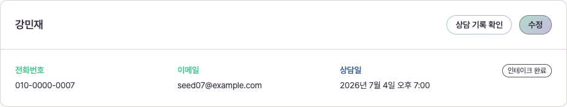
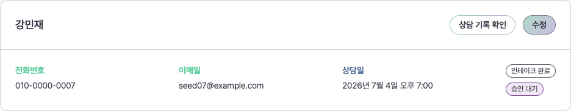
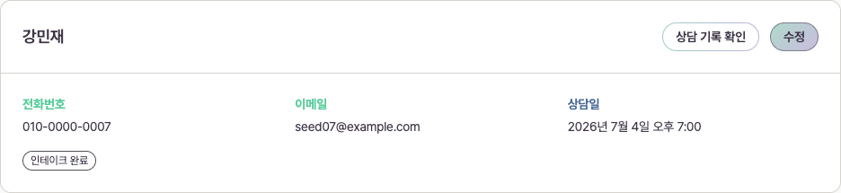
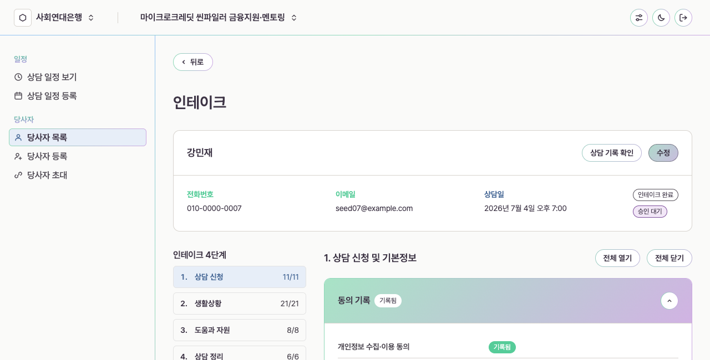
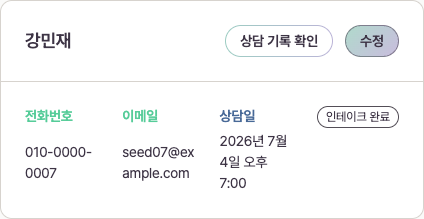
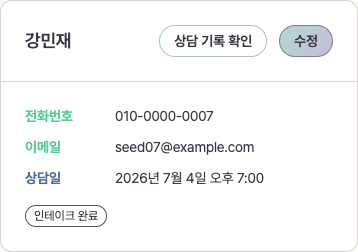

웹 HERO 배지 열 시안
모바일은 승인된 배치를 유지합니다. 웹에서만 전화번호, 이메일, 상담일 옆 오른쪽에 배지 전용 열을 추가했습니다. 배지는 정보 영역과 윗선을 맞춰 세로로 쌓습니다.
실제 개발 화면의 가상 데이터에 시안용 CSS만 적용해 촬영했습니다. 제품 코드와 모바일 배치는 바꾸지 않았습니다.
웹: 정보 3열 + 배지 열

웹: 배지가 여러 개라면 세로 배열

이전 웹 배치와 비교하기

실제 페이지 안에서 보기

좁은 웹 화면 768px에서 보기
데스크톱 사이드바를 유지하는 폭입니다. 정보 값은 좁아진 열 안에서 줄바꿈하며, 배지는 오른쪽 열에 남습니다.

모바일: 승인된 배치 그대로
정보 아래 맨 마지막에 배지를 가로로 둡니다. 320px, 390px, 767px에서 시안 CSS 적용 전후의 요소 위치와 크기가 동일했습니다.

검토용 시안입니다. 웹 배치 확인 후 실제 공통 부품에 반영합니다.